⏳ Vérification de votre niveau…
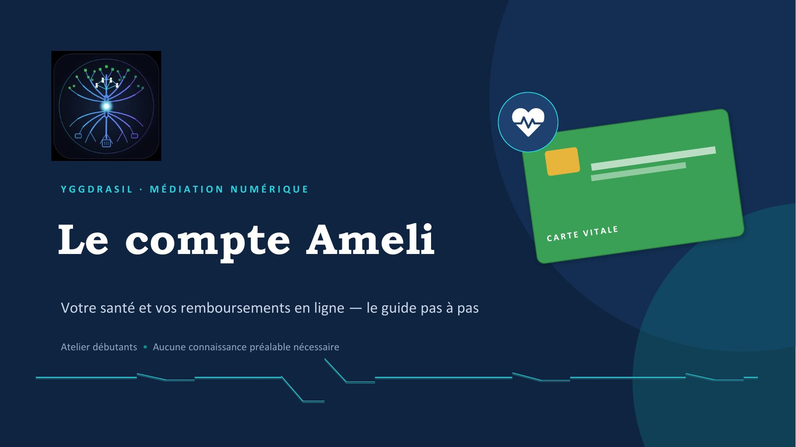
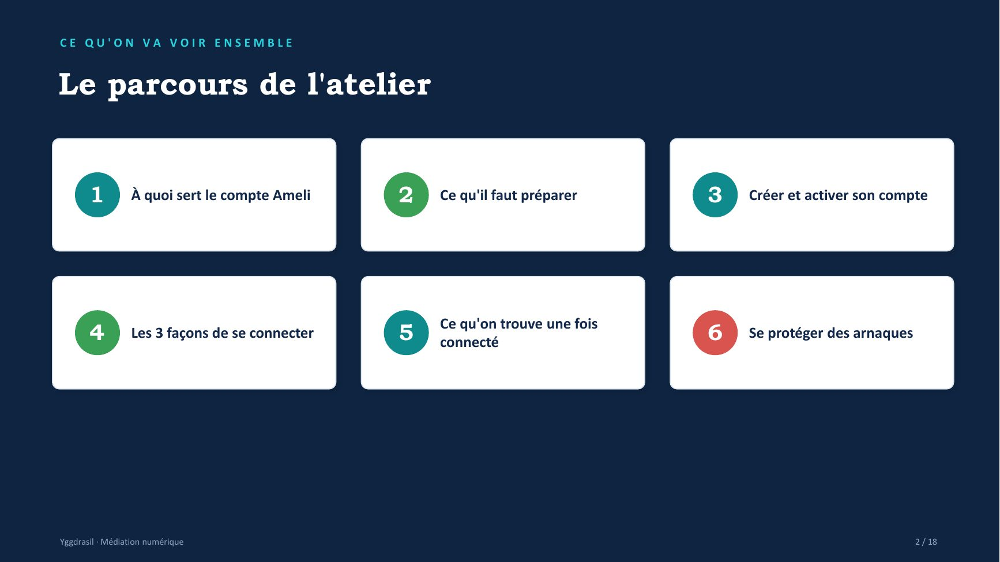
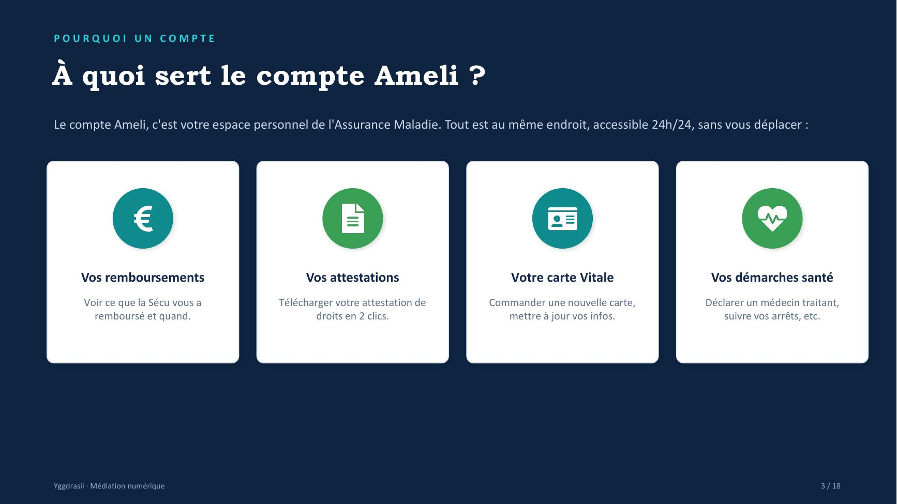
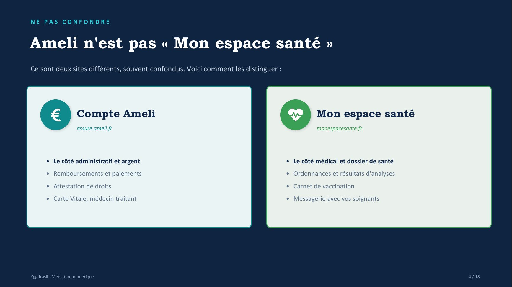
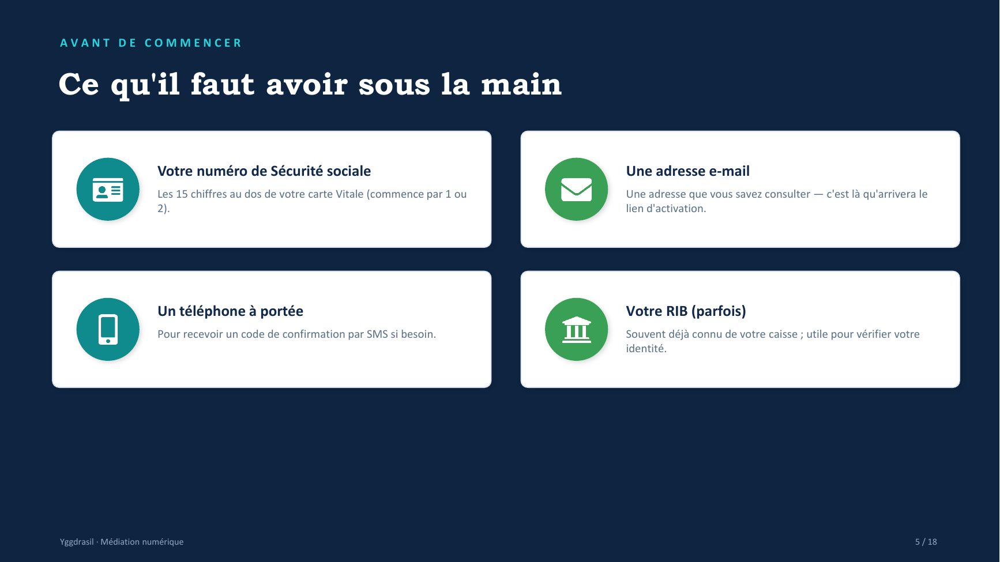
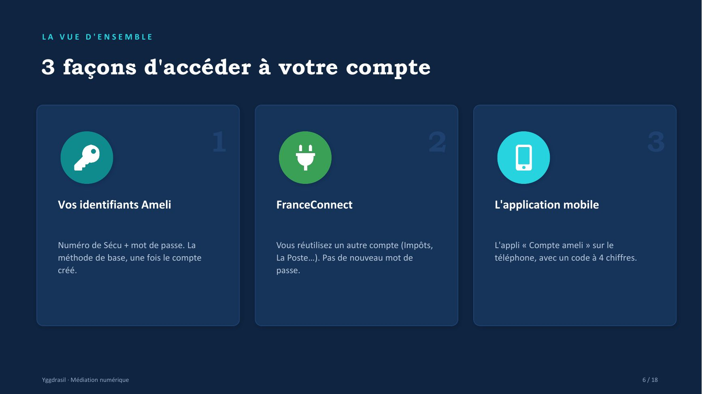
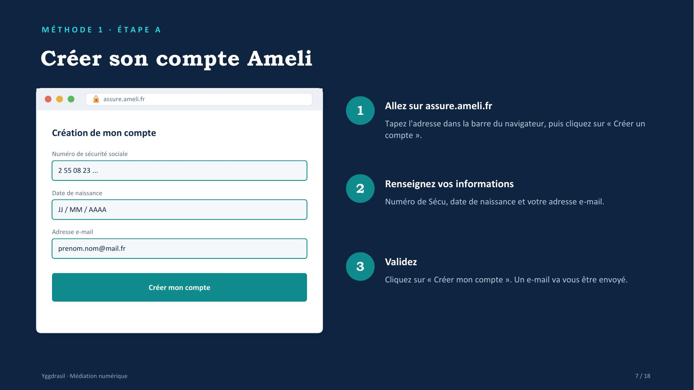
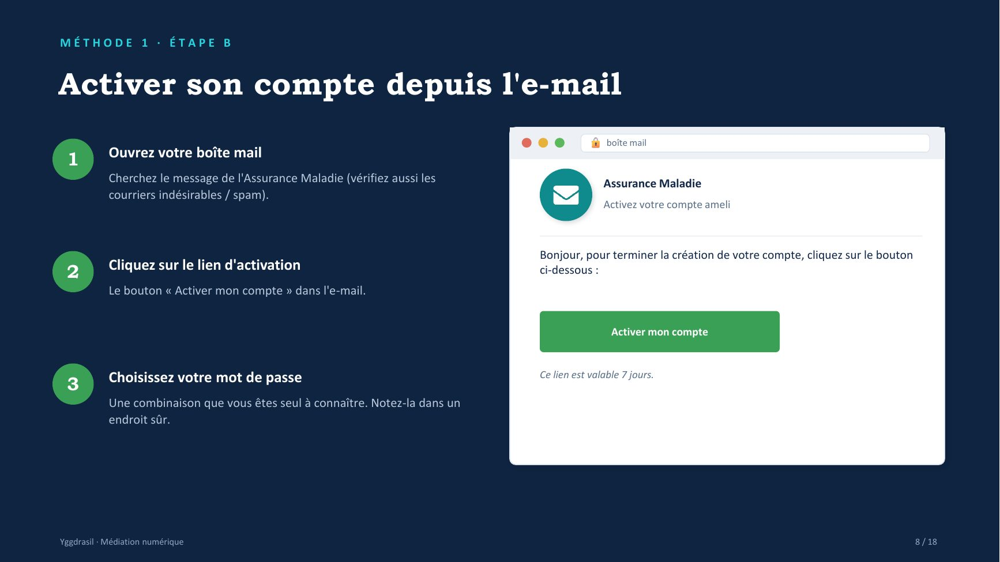
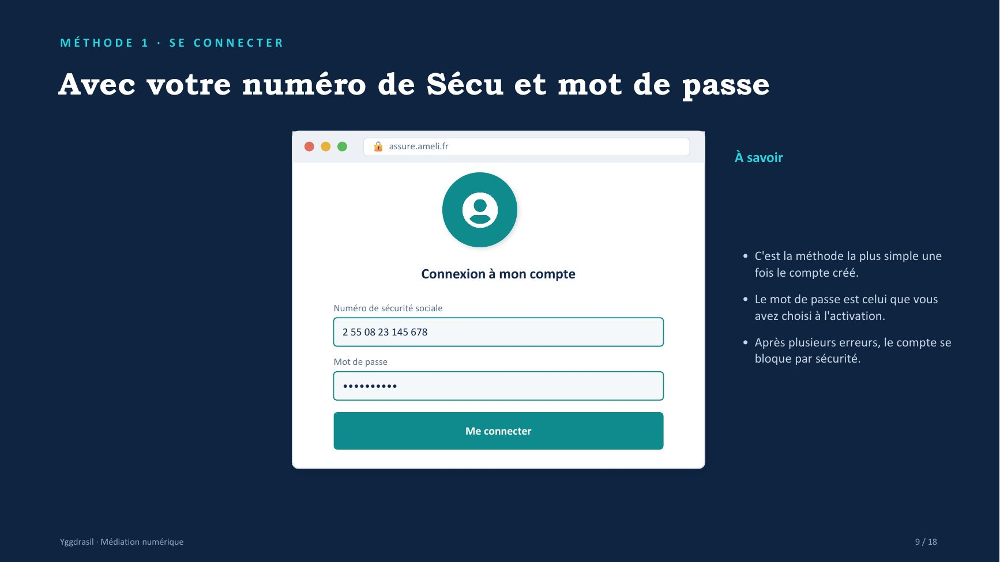
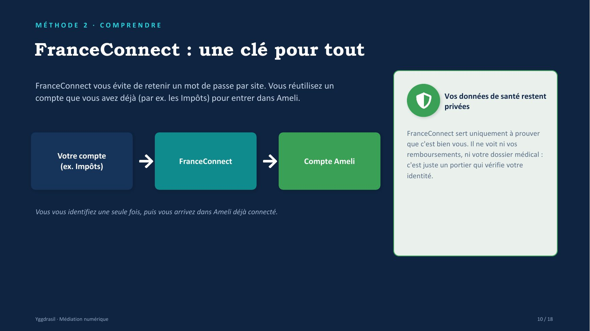
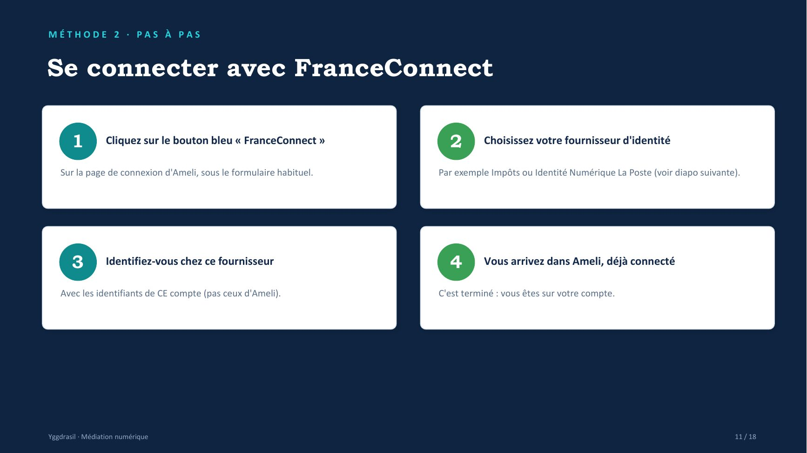
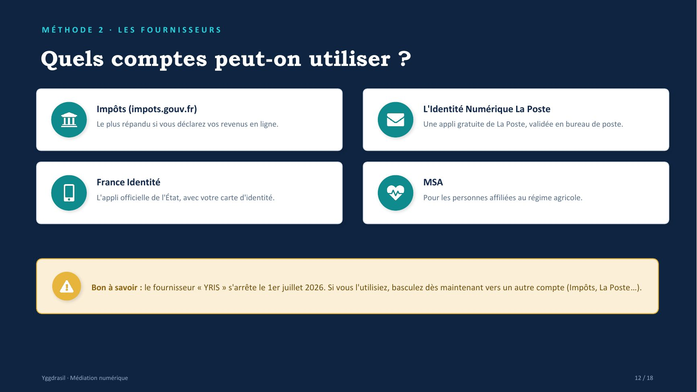
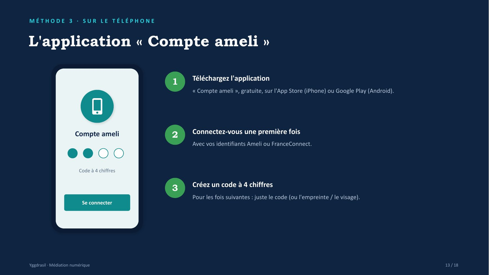
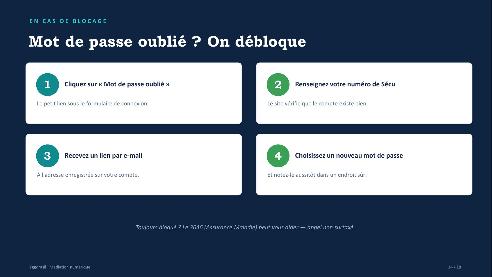
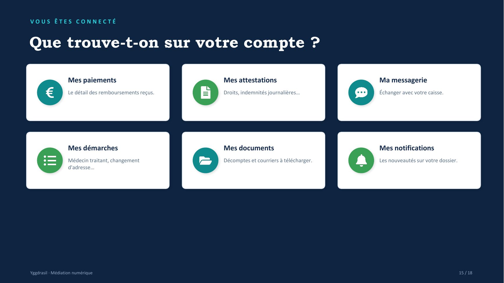
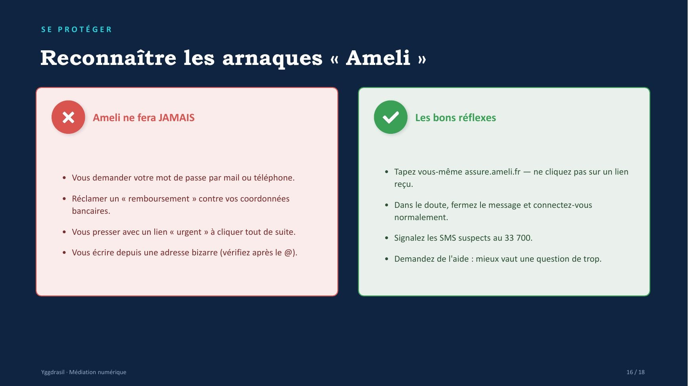
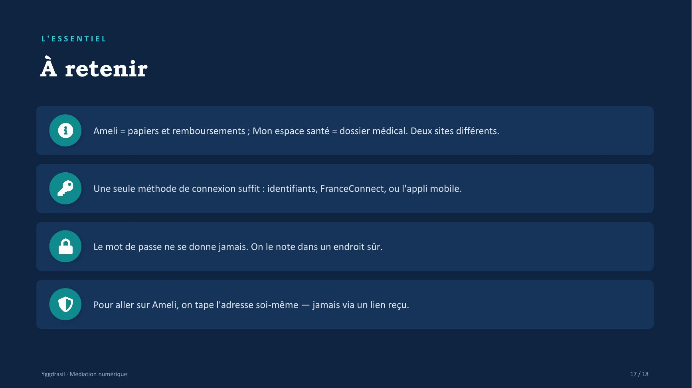
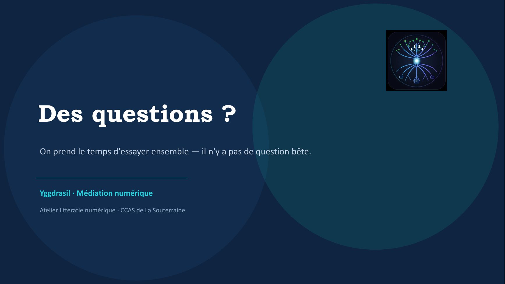
📄 Texte de la page (traduisible — les images ci-dessus restent en français)
YGGDRASIL · MÉDIATION NUMÉRIQUE
Le compte Ameli Votre santé et vos remboursements en ligne — le guide pas à pas
Atelier débutants • Aucune connaissance préalable nécessaire
CE QU'ON VA VOIR ENSEMBLE
Le parcours de l'atelier
1 À quoi sert le compte Ameli 2 Ce qu'il faut préparer 3 Créer et activer son compte
Ce qu'on trouve une fois 4 Les 3 façons de se connecter 5 connecté 6 Se protéger des arnaques
Yggdrasil · Médiation numérique 2 / 18
POURQUOI UN COMPTE
À quoi sert le compte Ameli ? Le compte Ameli, c'est votre espace personnel de l'Assurance Maladie. Tout est au même endroit, accessible 24h/24, sans vous déplacer :
Vos remboursements Vos attestations Votre carte Vitale Vos démarches santé Voir ce que la Sécu vous a Télécharger votre attestation de Commander une nouvelle carte, Déclarer un médecin traitant, remboursé et quand. droits en 2 clics. mettre à jour vos infos. suivre vos arrêts, etc.
Yggdrasil · Médiation numérique 3 / 18
NE PAS CONFONDRE
Ameli n'est pas « Mon espace santé » Ce sont deux sites différents, souvent confondus. Voici comment les distinguer :
Compte Ameli Mon espace santé assure.ameli.fr monespacesante.fr
• Le côté administratif et argent • Le côté médical et dossier de santé • Remboursements et paiements • Ordonnances et résultats d'analyses • Attestation de droits • Carnet de vaccination • Carte Vitale, médecin traitant • Messagerie avec vos soignants
Yggdrasil · Médiation numérique 4 / 18
AVANT DE COMMENCER
Ce qu'il faut avoir sous la main
Votre numéro de Sécurité sociale Une adresse e-mail Les 15 chiffres au dos de votre carte Vitale (commence par 1 ou Une adresse que vous savez consulter — c'est là qu'arrivera le 2). lien d'activation.
Un téléphone à portée Votre RIB (parfois) Pour recevoir un code de confirmation par SMS si besoin. Souvent déjà connu de votre caisse ; utile pour vérifier votre identité.
Yggdrasil · Médiation numérique 5 / 18
LA VUE D'ENSEMBLE
3 façons d'accéder à votre compte
1 2 3 Vos identifiants Ameli FranceConnect L'application mobile
Numéro de Sécu + mot de passe. La Vous réutilisez un autre compte (Impôts, L'appli « Compte ameli » sur le méthode de base, une fois le compte La Poste…). Pas de nouveau mot de téléphone, avec un code à 4 chiffres. créé. passe.
Yggdrasil · Médiation numérique 6 / 18
MÉTHODE 1 · ÉTAPE A
Créer son compte Ameli assure.ameli.fr Allez sur assure.ameli.fr 1 Tapez l'adresse dans la barre du navigateur, puis cliquez sur « Créer un Création de mon compte compte ».
Numéro de sécurité sociale
2 55 08 23 ... Renseignez vos informations Date de naissance 2 Numéro de Sécu, date de naissance et votre adresse e-mail. JJ / MM / AAAA
Adresse e-mail
prenom.nom@mail.fr Validez 3 Cliquez sur « Créer mon compte ». Un e-mail va vous être envoyé. Créer mon compte
Yggdrasil · Médiation numérique 7 / 18
MÉTHODE 1 · ÉTAPE B
Activer son compte depuis l'e-mail boîte mail Ouvrez votre boîte mail 1 Cherchez le message de l'Assurance Maladie (vérifiez aussi les Assurance Maladie courriers indésirables / spam). Activez votre compte ameli
Bonjour, pour terminer la création de votre compte, cliquez sur le bouton Cliquez sur le lien d'activation 2 ci-dessous : Le bouton « Activer mon compte » dans l'e-mail.
Activer mon compte
Choisissez votre mot de passe Ce lien est valable 7 jours. 3 Une combinaison que vous êtes seul à connaître. Notez-la dans un endroit sûr.
Yggdrasil · Médiation numérique 8 / 18
MÉTHODE 1 · SE CONNECTER
Avec votre numéro de Sécu et mot de passe assure.ameli.fr À savoir
• C'est la méthode la plus simple une Connexion à mon compte fois le compte créé.
• Le mot de passe est celui que vous Numéro de sécurité sociale avez choisi à l'activation. 2 55 08 23 145 678 • Après plusieurs erreurs, le compte se Mot de passe bloque par sécurité.
••••••••••
Me connecter
Yggdrasil · Médiation numérique 9 / 18
MÉTHODE 2 · COMPRENDRE
FranceConnect : une clé pour tout FranceConnect vous évite de retenir un mot de passe par site. Vous réutilisez un compte que vous avez déjà (par ex. les Impôts) pour entrer dans Ameli. Vos données de santé restent privées
FranceConnect sert uniquement à prouver que c'est bien vous. Il ne voit ni vos Votre compte remboursements, ni votre dossier médical : FranceConnect Compte Ameli c'est juste un portier qui vérifie votre (ex. Impôts) identité.
Vous vous identifiez une seule fois, puis vous arrivez dans Ameli déjà connecté.
Yggdrasil · Médiation numérique 10 / 18
MÉTHODE 2 · PAS À PAS
Se connecter avec FranceConnect
1 Cliquez sur le bouton bleu « FranceConnect » 2 Choisissez votre fournisseur d'identité
Sur la page de connexion d'Ameli, sous le formulaire habituel. Par exemple Impôts ou Identité Numérique La Poste (voir diapo suivante).
3 Identifiez-vous chez ce fournisseur 4 Vous arrivez dans Ameli, déjà connecté
Avec les identifiants de CE compte (pas ceux d'Ameli). C'est terminé : vous êtes sur votre compte.
Yggdrasil · Médiation numérique 11 / 18
MÉTHODE 2 · LES FOURNISSEURS
Quels comptes peut-on utiliser ?
Impôts (impots.gouv.fr) L'Identité Numérique La Poste Le plus répandu si vous déclarez vos revenus en ligne. Une appli gratuite de La Poste, validée en bureau de poste.
France Identité MSA L'appli officielle de l'État, avec votre carte d'identité. Pour les personnes affiliées au régime agricole.
Bon à savoir : le fournisseur « YRIS » s'arrête le 1er juillet 2026. Si vous l'utilisiez, basculez dès maintenant vers un autre compte (Impôts, La Poste…).
Yggdrasil · Médiation numérique 12 / 18
MÉTHODE 3 · SUR LE TÉLÉPHONE
L'application « Compte ameli »
Téléchargez l'application 1 « Compte ameli », gratuite, sur l'App Store (iPhone) ou Google Play (Android).
Connectez-vous une première fois Compte ameli 2 Avec vos identifiants Ameli ou FranceConnect.
Code à 4 chiffres
Créez un code à 4 chiffres 3 Pour les fois suivantes : juste le code (ou l'empreinte / le visage). Se connecter
Yggdrasil · Médiation numérique 13 / 18
EN CAS DE BLOCAGE
Mot de passe oublié ? On débloque
1 Cliquez sur « Mot de passe oublié » 2 Renseignez votre numéro de Sécu
Le petit lien sous le formulaire de connexion. Le site vérifie que le compte existe bien.
3 Recevez un lien par e-mail 4 Choisissez un nouveau mot de passe
À l'adresse enregistrée sur votre compte. Et notez-le aussitôt dans un endroit sûr.
Toujours bloqué ? Le 3646 (Assurance Maladie) peut vous aider — appel non surtaxé.
Yggdrasil · Médiation numérique 14 / 18
VOUS ÊTES CONNECTÉ
Que trouve-t-on sur votre compte ?
Mes paiements Mes attestations Ma messagerie Le détail des remboursements reçus. Droits, indemnités journalières… Échanger avec votre caisse.
Mes démarches Mes documents Mes notifications Médecin traitant, changement Décomptes et courriers à télécharger. Les nouveautés sur votre dossier. d'adresse…
Yggdrasil · Médiation numérique 15 / 18
SE PROTÉGER
Reconnaître les arnaques « Ameli »
Ameli ne fera JAMAIS Les bons réflexes
• Tapez vous-même assure.ameli.fr — ne cliquez pas sur un lien • Vous demander votre mot de passe par mail ou téléphone. reçu. • Réclamer un « remboursement » contre vos coordonnées • Dans le doute, fermez le message et connectez-vous bancaires. normalement. • Vous presser avec un lien « urgent » à cliquer tout de suite. • Signalez les SMS suspects au 33 700. • Vous écrire depuis une adresse bizarre (vérifiez après le @). • Demandez de l'aide : mieux vaut une question de trop.
Yggdrasil · Médiation numérique 16 / 18
L'ESSENTIEL
À retenir
Ameli = papiers et remboursements ; Mon espace santé = dossier médical. Deux sites différents.
Une seule méthode de connexion suffit : identifiants, FranceConnect, ou l'appli mobile.
Le mot de passe ne se donne jamais. On le note dans un endroit sûr.
Pour aller sur Ameli, on tape l'adresse soi-même — jamais via un lien reçu.
Yggdrasil · Médiation numérique 17 / 18
Des questions ? On prend le temps d'essayer ensemble — il n'y a pas de question bête.
Yggdrasil · Médiation numérique Atelier littératie numérique · CCAS de La Souterraine